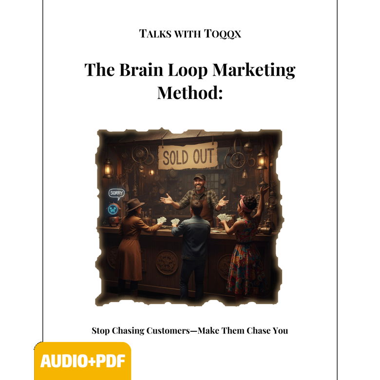

Talks With Toqqx transforms audiobooks into interactive experiences. Each title pairs a professionally narrated audiobook with a dedicated Hermes-powered Toqqx agent designed to help you think deeper, apply the ideas to your own life, and build real momentum from what you learn.
Instead of passively consuming information, you engage with it. The result is something closer to a guided thinking system than a traditional audiobook.
How It Works
Each Talks With Toqqx title stands on its own, with its own audience and direction. For listeners who want deeper collaboration, optional member communities are available for each individual title through Whop.
The complete audiobook to listen to when alone, walking, commuting, or at any time you are alone.
A Companion PDF that you can read or make notes on. Highlight the parts that really stick.
Long-term conversational agent to be your partner in your journey—a teacher, sidekick, and friend.
A community around the title where you can interact and share/learn from others. Wins, Fails, updates, livestreams, and a lot more.
Featured Titles

The Quiet Mechanics of Marketing That Compounds
Brain Loop Marketing explores how powerful marketing creates psychological tension by intentionally opening curiosity gaps that the mind feels compelled to close.
When people encounter an unresolved idea, unanswered question, or incomplete narrative, the brain naturally seeks resolution. That tension becomes an internal “itch” — one that quietly pulls attention back again and again until the loop is closed.
The audiobook breaks down how to ethically engineer these loops into branding, offers, funnels, storytelling, positioning, and audience retention so customers begin actively pursuing the solution themselves.
The companion Toqqx agent helps you dissect campaigns, pressure-test ideas, refine offers, and build compounding marketing systems tailored to your own business.
Shedding the Identity That Was Never Yours
Unbecoming You is a deep, reflective exploration of identity, social expectations, personal reinvention, and the active pursuit of self-authorship. It challenges the assumption that growth is about adding new layers; instead, it argues that true evolution is about stripping away the conditioning that was never yours to begin with.
From early childhood, we internalize scripts written by our families, cultures, and peers. We construct elaborate personas to secure safety, approval, and success, only to wake up mid-career or mid-life feeling like strangers in our own lives. This title acts as a guide to identifying these invisible structures of conditioning.
The companion Toqqx agent serves as an objective thinking partner, prompting you to examine inherited beliefs, track recurring patterns of self-sabotage, and address the emotional resistance that surfaces when you attempt to change. Together, you will dissect the gap between your constructed identity and your authentic path.
By engaging in direct dialogue with the agent, you don’t just read about self-authorship—you actively practice it, rewriting your core narratives and building the psychological confidence to make choices aligned with your true values.
A Guide for Divorced Fathers
Created specifically for separated and divorced fathers, Good Dad, Different Address is a practical blueprint for remaining an active, emotionally present, and deeply positive influence in your children's lives, regardless of living arrangements. It bypasses conventional legalistic advice to focus on the psychological and relational heart of fatherhood.
The transition from a full-time, cohabitating father to a dad with a "different address" is often fraught with grief, anger, and systemic confusion. This guide helps you navigate the complex transition from husband to co-parent, ensuring your children are protected from adult conflict and that their need for stability is placed above all else.
The parenting-focused Toqqx agent serves as a private, real-time sounding board. It helps you process co-parenting friction, draft constructive messages to your ex-spouse, design consistent households across different locations, and establish meaningful, high-value routines for the time you spend with your children.
Additionally, the agent acts as an emotional regulation partner, helping you manage stress and maintain a calm, authoritative, and loving presence for your kids when they need it most. You will build a clear, long-term vision of your identity as a father who leads with empathy and strength.
Navigating Dual Care Responsibilities
A compassionate and highly practical guide designed for those caught in the double caregiving squeeze: raising growing children while simultaneously managing the declining health and care of aging parents. This book addresses the financial, physical, and emotional exhaustion unique to this life stage.
Being a caregiver for two generations requires a masterclass in boundary setting, emotional intelligence, and self-preservation. This title dives deep into the realities of sibling dynamics, end-of-life care conversations, and the persistent guilt of feeling like you are failing everyone because your attention is constantly divided.
The companion Toqqx agent acts as a vital sanity check and organizational partner. It helps you map out care schedules, organize medical information, process caregiver grief and fatigue, and find local resources to distribute the physical workload.
By interacting with the agent, you will develop personalized coping strategies to establish healthy boundaries, manage daily stress, and protect your own mental and physical well-being. The goal is to move from a state of constant emergency management to one of structured, sustainable care.
The Power of the Ecosystem
Talks With Toqqx is built on three core pillars designed to take you from passive listening to active application, collective learning, and shared growth.
Your Custom Thinking Partner
The Hermes Agent is a particularly powerful partner because it bypasses generic AI limitations to act as a deep cognitive extension of the audiobook itself.
Equipped with long-term conversational memory and deep awareness of each title's frameworks, Hermes doesn't just answer questions—it prompts you to reflect, pressure-tests your ideas, holds you accountable, and functions as a dedicated teacher, sidekick, and mentor throughout your personal growth journey.
Collective Momentum
Traditional audiobooks are consumed in isolation, but true transformation happens through shared experience.
Joining the Whop-based member communities unlocks powerful advantages: you can collaborate with peers reading the same title, share wins and setbacks, access exclusive creator updates, participate in live broadcasts, and accelerate your learning inside a focused ecosystem.
Rewards for Community Growth
We reward you directly for helping to grow the audience of the audiobooks you love.
By sharing your unique link, you receive a generous 30% recurring commission on every member you refer. The math makes sense: just 4 referrals yield 120%—meaning your own membership is completely paid for, while creating an ongoing stream of passive reward.
Designed for Depth, Not Passive Consumption
Every title combines long-form audio with a conversational AI layer designed to help you reflect, apply, question, and evolve the material in a way that feels personal and alive.
Choose the titles that resonate with where you are now. Go deeper when you’re ready.